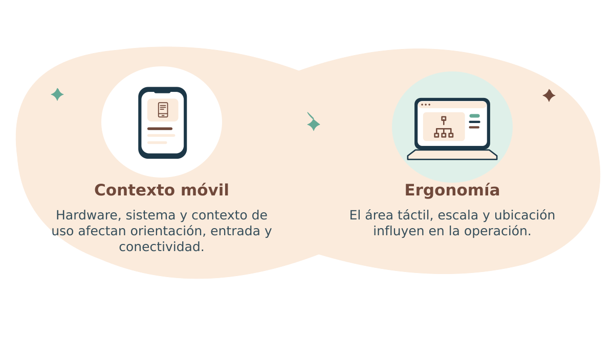
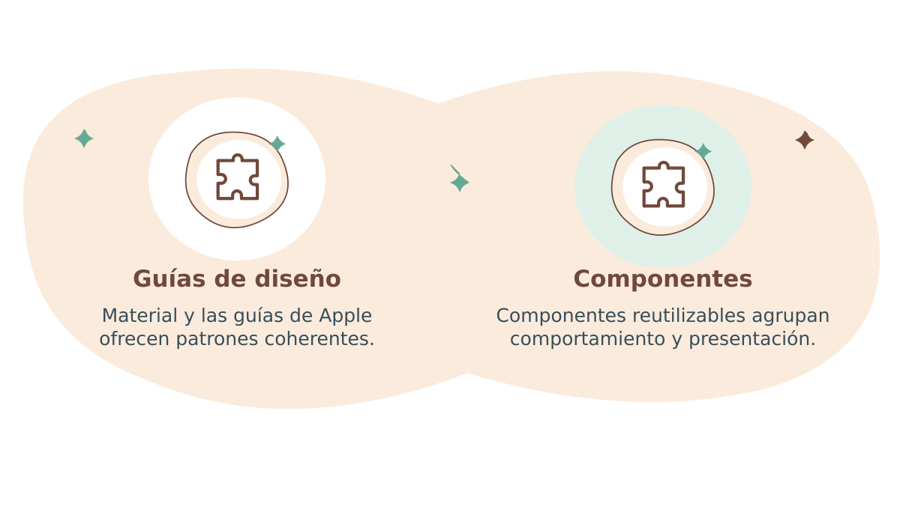
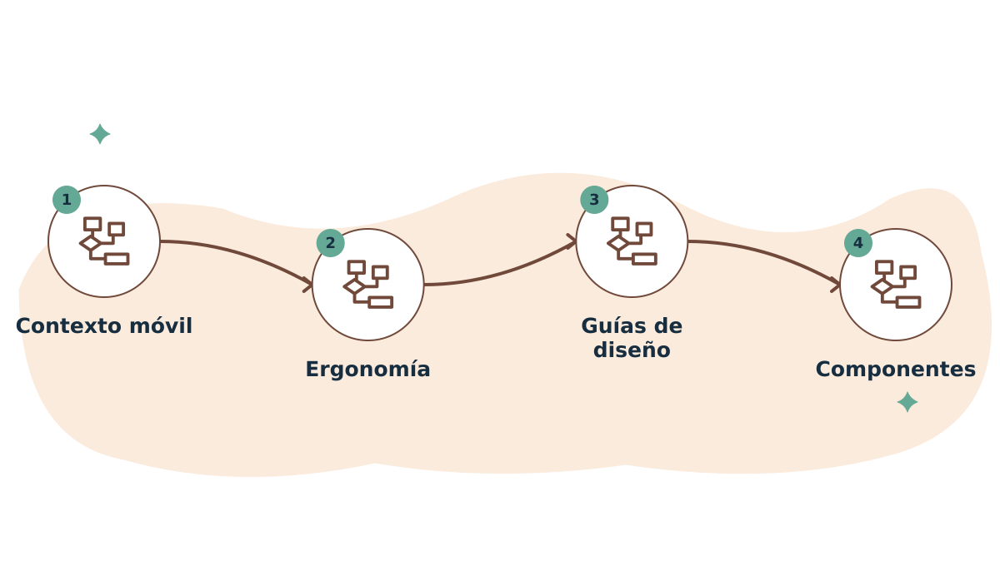

<div style="font-family:'Segoe UI',Arial,sans-serif;color:#333;line-height:1.6;max-width:100%;"><div style="background:#fff;border:1px solid #dee2e6;border-radius:15px;padding:22px;margin-bottom:20px;box-shadow:0 4px 12px rgba(0,0,0,.05);"><h2 style="color:#0056b3;margin-top:0;">Unidad 1 · Material de estudio</h2><h2 style="color:#1c3055; line-height:1.35; overflow-wrap:anywhere;">Unidad 1: Fundamentos de interfaces móviles centradas en el usuario y diseño ergonómico</h2>
<p style="overflow-wrap:anywhere;"></p>
<h3 style="color:#1c3055; line-height:1.35; overflow-wrap:anywhere;">Introducción</h3>
<p style="overflow-wrap:anywhere;">En esta unidad trabajarás con <strong>Contexto móvil</strong>, <strong>Ergonomía</strong>, <strong>Guías de diseño</strong> y <strong>Componentes</strong>. Observa cómo se relacionan estos conceptos al resolver el caso inicial.</p>
<h3 style="color:#1c3055; line-height:1.35; overflow-wrap:anywhere;">Resultados de aprendizaje</h3>
<p style="overflow-wrap:anywhere;">Resultados curriculares: Los estudiantes emplean entornos de programación y componentes móviles para ejecutar aplicaciones básicas y realizar pruebas de funcionamiento según procedimientos indicados.</p>
<p style="overflow-wrap:anywhere;"><strong>Resultados específicos de unidad</strong></p>
<ul>
<li style="overflow-wrap:anywhere;">Diseña pantallas respetando zonas de alcance del pulgar y dimensiones mínimas de objetivos táctiles en dispositivos móviles.</li>
<li style="overflow-wrap:anywhere;">Estructura flujos de navegación móvil priorizando acciones frecuentes y reduciendo la carga cognitiva del usuario.</li>
<li style="overflow-wrap:anywhere;">Aplica sistemas de color, tipografía y elevación siguiendo los lineamientos de Material Design y Human Interface Guidelines.</li>
<li style="overflow-wrap:anywhere;">Adapta componentes visuales garantizando consistencia y coherencia estética en múltiples factores de forma y densidades de pantalla.</li>
</ul>
<h3 style="color:#1c3055; line-height:1.35; overflow-wrap:anywhere;">Mapa de contenidos</h3>
<div style="overflow-x:auto;max-width:100%;margin:16px 0;"><table class="table" style="width:100%;border-collapse:collapse;font-size:.9rem;">
<thead>
<tr>
<th style="padding:10px;border-bottom:1px solid #dee2e6;text-align:left;vertical-align:top;background:#eef4fb;color:#0056b3;" scope="col">Tema del PEA</th>
<th style="padding:10px;border-bottom:1px solid #dee2e6;text-align:left;vertical-align:top;background:#eef4fb;color:#0056b3;" scope="col">Subtemas</th>
</tr>
</thead>
<tbody><tr>
<td style="padding:10px;border-bottom:1px solid #dee2e6;text-align:left;vertical-align:top;">1. El ecosistema móvil / Principios de ergonomía móvil</td>
<td style="padding:10px;border-bottom:1px solid #dee2e6;text-align:left;vertical-align:top;">1.1 El ecosistema móvil: características de hardware, sistemas operativos (Android e iOS) y patrones de uso.<br>1.2 Principios de ergonomía móvil: zonas táctiles de alcance, densidad de pantalla (DPI/PPI) y accesibilidad.</td>
</tr>
<tr>
<td style="padding:10px;border-bottom:1px solid #dee2e6;text-align:left;vertical-align:top;">2. Guías de diseño móvil líderes / Arquitectura de componentes móviles y frameworks multiplataforma (Flutter / React Native).</td>
<td style="padding:10px;border-bottom:1px solid #dee2e6;text-align:left;vertical-align:top;">1.3 Guías de diseño móvil líderes: Google Material Design 3 y Apple Human Interface Guidelines.<br>1.4 Arquitectura de componentes móviles y frameworks multiplataforma (Flutter / React Native).</td>
</tr>
</tbody></table>
</div><h3 style="color:#1c3055; line-height:1.35; overflow-wrap:anywhere;">Caso inicial</h3>
<p style="overflow-wrap:anywhere;">La aplicación ficticia de comercio local <em>MercadoSierra Móvil</em> recibió críticas en sus pruebas iniciales: los compradores que usan el teléfono con una sola mano presionan involuntariamente el botón de vaciar carrito porque está pegado al botón de pago, los textos de precios se cortan en pantallas pequeñas y el diseño mezcla componentes incoherentes entre Android y dispositivos de Apple. Usted asumirá el rediseño y la maquetación ergonómica de sus pantallas principales en un marco multiplataforma.</p>
<h3 style="color:#1c3055; line-height:1.35; overflow-wrap:anywhere;">Fundamentos conceptuales</h3>
<p style="overflow-wrap:anywhere;">Diseñar para teléfonos inteligentes difiere profundamente de diseñar para computadores de escritorio: la pantalla es estrecha, la interacción se realiza con los dedos (sin cursor de precisión) y la persona suele usar el dispositivo en movimiento, con una sola mano o bajo luz solar directa. Por ello, la <strong>ergonomía móvil</strong> divide la pantalla según la <strong>zona natural de alcance del pulgar</strong>: el área inferior central es la más cómoda para acciones frecuentes y botones principales, mientras que las esquinas superiores resultan difíciles de alcanzar sin cambiar el agarre y deben reservarse para acciones secundarias. Asimismo, todo objetivo táctil interactivo debe respetar dimensiones mínimas recomendadas (al menos 48 por 48 píxeles independientes de densidad en Android o 44 por 44 puntos en el sistema operativo móvil de Apple, iOS) con suficiente separación entre controles para evitar pulsaciones accidentales.</p>
<p style="overflow-wrap:anywhere;">Debido a la enorme variedad de pantallas, los desarrolladores nunca maquetan usando píxeles físicos fijos, sino unidades lógicas adaptables independientes de la densidad —<strong>puntos por pulgada (DPI)</strong> y <strong>píxeles por pulgada (PPI)</strong>— apoyadas en diseños responsivos que responden a cambios de ancho, orientación y tamaño de fuente del usuario.</p>
<p style="overflow-wrap:anywhere;">Para evitar curvas de aprendizaje innecesarias, las interfaces respetan las guías oficiales de cada ecosistema: <strong>Material Design 3</strong> (de Google, con énfasis en esquemas de color dinámicos, tarjetas con elevación tonal, barras inferiores y botones flotantes de acción) y <strong>Human Interface Guidelines</strong> (de Apple, centradas en claridad tipográfica, jerarquía limpia, barras de navegación superiores y respeto por las áreas seguras de pantalla). Frameworks multiplataforma como <strong>Flutter</strong> (basado en lenguaje Dart y un árbol declarativo de componentes llamados <em>widgets</em> que dibujan su propia interfaz de forma consistente) o <strong>React Native</strong> (basado en JavaScript o TypeScript y componentes nativos de plataforma) permiten construir una sola base de código que adopta convenciones ergonómicas coherentes en ambos sistemas.</p>
<h3 style="color:#1c3055; line-height:1.35; overflow-wrap:anywhere;">Tema 1: El ecosistema móvil / Principios de ergonomía móvil</h3>
<p style="overflow-wrap:anywhere;"></p>
<h4 style="color:#1c3055; line-height:1.35; overflow-wrap:anywhere;">1.1 El ecosistema móvil: características de hardware, sistemas operativos (Android e iOS) y patrones de uso.</h4>
<p style="overflow-wrap:anywhere;"><strong>Desarrollo técnico y aplicación.</strong> El contexto móvil combina hardware, sistema, conectividad e interrupciones. Una misma tarea puede ejecutarse con una mano y cambiar de red. No asuma que emulador y dispositivo físico producen la misma experiencia. Registre las condiciones del ensayo y evalúe qué parte del recorrido depende de permisos, sensores o capacidades que no están disponibles en todos los equipos del caso.</p>
<p style="overflow-wrap:anywhere;">Hardware, sistema y contexto de uso afectan orientación, entrada y conectividad. Define qué debe lograr la persona en movilidad.</p>
<h4 style="color:#1c3055; line-height:1.35; overflow-wrap:anywhere;">1.2 Principios de ergonomía móvil: zonas táctiles de alcance, densidad de pantalla (DPI/PPI) y accesibilidad.</h4>
<p style="overflow-wrap:anywhere;"><strong>Desarrollo técnico y aplicación.</strong> Densidad y tamaño físico no equivalen a cantidad bruta de píxeles. Un objetivo táctil debe ser alcanzable y distinguible en contexto. La zona cómoda depende de mano, postura y dispositivo. Pruebe texto ampliado y teclado en pantalla. Un control situado correctamente en una captura puede quedar oculto o demasiado próximo a una acción destructiva al cambiar condiciones.</p>
<p style="overflow-wrap:anywhere;">El área táctil, escala y ubicación influyen en la operación. Evalúa contraste, texto ampliado y acceso con distintos tamaños de pantalla.</p>
<p style="overflow-wrap:anywhere;"><strong>Contenidos de base consignados en el PEA.</strong> Contenidos de base: Fundamentos de interfaces móviles centradas en el usuario · Núcleo curricular: Desarrollo de interfaces móviles centradas en el usuario</p>
<h3 style="color:#1c3055; line-height:1.35; overflow-wrap:anywhere;">Tema 2: Guías de diseño móvil líderes / Arquitectura de componentes móviles y frameworks multiplataforma (Flutter / React Native).</h3>
<p style="overflow-wrap:anywhere;"></p>
<h4 style="color:#1c3055; line-height:1.35; overflow-wrap:anywhere;">1.3 Guías de diseño móvil líderes: Google Material Design 3 y Apple Human Interface Guidelines.</h4>
<p style="overflow-wrap:anywhere;"><strong>Desarrollo técnico y aplicación.</strong> Las guías de plataforma establecen patrones y convenciones que ayudan a reconocer acciones. No mezcle componentes sin revisar su comportamiento esperado. El material presenta principios y el entorno de la práctica concreta su aplicación. Una apariencia semejante a una plataforma no demuestra accesibilidad ni uso correcto de estados, navegación y retroalimentación en una tarea completa.</p>
<p style="overflow-wrap:anywhere;">Material y las guías de Apple ofrecen patrones coherentes. Revisa el criterio aplicable a la plataforma y conserva consistencia de navegación.</p>
<h4 style="color:#1c3055; line-height:1.35; overflow-wrap:anywhere;">1.4 Arquitectura de componentes móviles y frameworks multiplataforma (Flutter / React Native).</h4>
<p style="overflow-wrap:anywhere;"><strong>Desarrollo técnico y aplicación.</strong> Los frameworks multiplataforma ofrecen componentes y mecanismos de actualización, pero no eliminan particularidades del dispositivo. Separe presentación, estado y acceso a servicios. Una pantalla debería expresar estados de la tarea sin contener todas las operaciones del sistema. Esa separación facilita probar reglas, sustituir fuentes de datos y localizar si un fallo pertenece a interfaz o integración.</p>
<p style="overflow-wrap:anywhere;">Componentes reutilizables agrupan comportamiento y presentación. Un framework multiplataforma comparte parte del código y conserva particularidades del dispositivo.</p>
<p style="overflow-wrap:anywhere;"><strong>Contenidos de base consignados en el PEA.</strong> Contenidos de base: Construcción de interfaces móviles centradas en el usuario</p>
<h3 style="color:#1c3055; line-height:1.35; overflow-wrap:anywhere;">Ejemplo aplicado</h3>
<p style="overflow-wrap:anywhere;">Coloca la acción principal en una posición alcanzable y prueba con una mano. Verifica también lectura al ampliar el tamaño del texto.</p>
<p style="overflow-wrap:anywhere;">Considere una pantalla móvil ficticia de registro rápido que coloca los botones <em>"Guardar"</em> y <em>"Cancelar"</em> pegados en la esquina superior derecha con una altura de 28 unidades lógicas y letra gris claro de 10 puntos.</p>
<ul>
<li style="overflow-wrap:anywhere;"><em>Diagnóstico ergonómico:</em> Al sostener el teléfono con una mano, el usuario debe estirar el pulgar hasta la esquina más alejada, corre alto riesgo de presionar <em>"Cancelar"</em> por error al intentar guardar y sufre fatiga visual por el tamaño diminuto de la fuente.</li>
<li style="overflow-wrap:anywhere;"><em>Corrección aplicada:</em> Se reubica la acción primaria <em>"Guardar"</em> en la zona inferior accesible con una altura mínima de 48 unidades lógicas y contraste alto, se separa al menos 16 unidades de la acción secundaria, y se ajusta la tipografía principal a un mínimo legible de 14 a 16 unidades respetando el escalado del sistema.</li>
</ul>
<h3 style="color:#1c3055; line-height:1.35; overflow-wrap:anywhere;">Profundización técnica de la unidad</h3>
<h4 style="color:#1c3055; line-height:1.35; overflow-wrap:anywhere;">Ergonomía y contexto móvil</h4>
<p style="overflow-wrap:anywhere;">El uso móvil combina pantallas pequeñas, cambios de orientación, interrupciones y conectividad variable. La zona cómoda de alcance depende de mano, postura y dispositivo; no constituye un mapa universal aplicable a cualquier usuario. Diseñe objetivos táctiles claros y separación suficiente, y contraste las dimensiones con las guías de la plataforma usada.</p>
<p style="overflow-wrap:anywhere;"><strong>Ejemplo resuelto.</strong> Un botón de confirmación situado junto a «Eliminar» genera toques accidentales en un ensayo. La mejora no consiste solo en agrandarlo: se separan acciones, se distingue su apariencia y se permite revisar una operación destructiva. La prueba compara errores y comprensión, manteniendo la misma tarea.</p>
<p style="overflow-wrap:anywhere;">Respete áreas seguras, teclado en pantalla y escalado de texto. Una vista que funciona en un emulador grande puede ocultar controles cuando aparece el teclado en otro dispositivo. Las guías de Material Design y de la plataforma deben leerse según versión; mezclar componentes sin criterio puede producir comportamientos incoherentes. <strong>Reflexión:</strong> ¿qué cambia en la tarea cuando la persona utiliza una mano y pierde momentáneamente la conexión?</p>
<h4 style="color:#1c3055; line-height:1.35; overflow-wrap:anywhere;">Datos y condiciones para estudiar el caso en detalle</h4>
<p style="overflow-wrap:anywhere;">La iniciativa ficticia de comercio local <em>MercadoSierra Móvil</em> (caso simulado exclusivamente con fines formativos) necesita construir su aplicación móvil para productores comunitarios y compradores urbanos. En la revisión de los bocetos iniciales de dos pantallas clave —<strong>Perfil de usuario</strong> y <strong>Catálogo de servicios y productos locales</strong>— se detectaron cinco fallas críticas de experiencia de usuario (UX) móvil:</p>
<div style="overflow-x:auto;max-width:100%;margin:16px 0;"><table class="table" style="width:100%;border-collapse:collapse;font-size:.9rem;">
<thead>
<tr>
<th style="padding:10px;border-bottom:1px solid #dee2e6;text-align:left;vertical-align:top;background:#eef4fb;color:#0056b3;" scope="col">Identificador</th>
<th style="padding:10px;border-bottom:1px solid #dee2e6;text-align:left;vertical-align:top;background:#eef4fb;color:#0056b3;" scope="col">Pantalla o componente</th>
<th style="padding:10px;border-bottom:1px solid #dee2e6;text-align:left;vertical-align:top;background:#eef4fb;color:#0056b3;" scope="col">Problema detectado en revisión inicial</th>
<th style="padding:10px;border-bottom:1px solid #dee2e6;text-align:left;vertical-align:top;background:#eef4fb;color:#0056b3;" scope="col">Criterio ergonómico que se debe cumplir</th>
</tr>
</thead>
<tbody><tr>
<td style="padding:10px;border-bottom:1px solid #dee2e6;text-align:left;vertical-align:top;">MOV-01</td>
<td style="padding:10px;border-bottom:1px solid #dee2e6;text-align:left;vertical-align:top;">Botón principal "Agregar servicio"</td>
<td style="padding:10px;border-bottom:1px solid #dee2e6;text-align:left;vertical-align:top;">Ubicado en la esquina superior izquierda con tamaño de 28 por 28 píxeles lógicos</td>
<td style="padding:10px;border-bottom:1px solid #dee2e6;text-align:left;vertical-align:top;">Ubicar en zona cómoda del pulgar (parte inferior) con objetivo táctil mínimo de 48 por 48 unidades lógicas</td>
</tr>
<tr>
<td style="padding:10px;border-bottom:1px solid #dee2e6;text-align:left;vertical-align:top;">MOV-02</td>
<td style="padding:10px;border-bottom:1px solid #dee2e6;text-align:left;vertical-align:top;">Tarjetas del catálogo</td>
<td style="padding:10px;border-bottom:1px solid #dee2e6;text-align:left;vertical-align:top;">Texto de descripción cortado con desbordamiento horizontal al aumentar la fuente</td>
<td style="padding:10px;border-bottom:1px solid #dee2e6;text-align:left;vertical-align:top;">Diseño adaptable con ajuste automático de línea y soporte hasta escalado de texto grande</td>
</tr>
<tr>
<td style="padding:10px;border-bottom:1px solid #dee2e6;text-align:left;vertical-align:top;">MOV-03</td>
<td style="padding:10px;border-bottom:1px solid #dee2e6;text-align:left;vertical-align:top;">Paleta visual y elevación</td>
<td style="padding:10px;border-bottom:1px solid #dee2e6;text-align:left;vertical-align:top;">Fondo gris oscuro con letras gris medio y tarjetas planas sin jerarquía</td>
<td style="padding:10px;border-bottom:1px solid #dee2e6;text-align:left;vertical-align:top;">Sistema de color con contraste accesible y elevación tonal coherente con Material Design 3</td>
</tr>
<tr>
<td style="padding:10px;border-bottom:1px solid #dee2e6;text-align:left;vertical-align:top;">MOV-04</td>
<td style="padding:10px;border-bottom:1px solid #dee2e6;text-align:left;vertical-align:top;">Separación entre acciones</td>
<td style="padding:10px;border-bottom:1px solid #dee2e6;text-align:left;vertical-align:top;">Botones "Editar perfil" y "Cerrar sesión" separados por solo 2 unidades lógicas</td>
<td style="padding:10px;border-bottom:1px solid #dee2e6;text-align:left;vertical-align:top;">Separación mínima segura de al menos 8 a 16 unidades para evitar pulsaciones accidentales</td>
</tr>
<tr>
<td style="padding:10px;border-bottom:1px solid #dee2e6;text-align:left;vertical-align:top;">MOV-05</td>
<td style="padding:10px;border-bottom:1px solid #dee2e6;text-align:left;vertical-align:top;">Coherencia de plataforma</td>
<td style="padding:10px;border-bottom:1px solid #dee2e6;text-align:left;vertical-align:top;">Encabezados y tipografías mezcladas sin respetar las áreas seguras del dispositivo</td>
<td style="padding:10px;border-bottom:1px solid #dee2e6;text-align:left;vertical-align:top;">Uso de áreas seguras (<em>SafeArea</em>) y adaptación coherente de componentes para Android y Apple iOS</td>
</tr>
</tbody></table>
</div><p style="overflow-wrap:anywhere;">Su misión durante las semanas 1 y 2 consiste en maquetar ambas pantallas funcionales de <em>MercadoSierra Móvil</em> en Flutter o React Native, probar su respuesta visual en al menos dos tamaños y densidades de pantalla —puntos por pulgada (DPI) y píxeles por pulgada (PPI)—, intercambiar observaciones de compatibilidad en Moodle y entregar la evidencia integrada con su explicación asincrónica.</p>
<h4 style="color:#1c3055; line-height:1.35; overflow-wrap:anywhere;">Desarrollo del procedimiento y controles del caso</h4>
<p style="overflow-wrap:anywhere;">El siguiente recorrido desarrolla la misma práctica de esta unidad. Se estudia junto con sus datos y controles; las consignas y los criterios de entrega se conservan en el apartado de actividades y en la guía enlazada.</p>
<ol>
<li style="overflow-wrap:anywhere;"><strong>Configuración de arquitectura y tema base (semana 1):</strong> Cree un proyecto multiplataforma limpio en Visual Studio Code o Android Studio y configure un sistema de diseño centralizado (<em>ThemeData</em> en Flutter o tema equivalente en React Native) aplicando la paleta de color, jerarquía tipográfica y elevación tonal de Material Design 3, asegurando contraste legible en modo claro.</li>
<li style="overflow-wrap:anywhere;"><strong>Maquetación ergonómica de Perfil y Catálogo de servicios:</strong> Construya las dos pantallas de <em>MercadoSierra Móvil</em> respetando la zona natural de alcance del pulgar para las acciones principales (botón flotante o barra inferior accesible), objetivos táctiles mínimos de 48 por 48 unidades lógicas, separación segura entre botones destructivos y de guardado, y protección de bordes mediante áreas seguras (<em>SafeArea</em>).</li>
<li style="overflow-wrap:anywhere;"><strong>Refinamiento multiplataforma y densidad de pantalla (semana 2):</strong> Estructure componentes reutilizables separados en archivos limpios y verifique la consistencia visual aplicando criterios de Material Design 3 y adaptaciones equivalentes para el sistema operativo móvil de Apple (iOS) según las Human Interface Guidelines (como alineación de barra superior y espaciado de listas).</li>
<li style="overflow-wrap:anywhere;"><strong>Pruebas en múltiples factores de forma y condiciones límite:</strong> Ejecute la aplicación y capture evidencias bajo tres condiciones: (a) condición normal en un emulador estándar (por ejemplo, teléfono de 6 pulgadas y densidad media); (b) condición límite aumentando el tamaño de fuente del sistema al máximo y probando un teléfono compacto (4,7 pulgadas o pantalla estrecha) o rotación horizontal para comprobar que no haya textos cortados ni desbordamientos; y (c) verificación de accesibilidad táctil revisando que dos controles contiguos no reciban toques accidentales.</li>
<li style="overflow-wrap:anywhere;"><strong>Intercambio asincrónico sobre compatibilidad de emuladores:</strong> Publique las capturas de sus dos emuladores o resoluciones en el espacio asincrónico indicado en Moodle y registre un comentario constructivo sobre la compatibilidad visual observada en el trabajo de un par (documentando en su propio informe qué ajuste aplicó a partir de esa revisión).</li>
<li style="overflow-wrap:anywhere;"><strong>Explicación asincrónica e integración final:</strong> Grabe un breve audio o video asincrónico (entre 2 y 3 minutos) recorriendo las pantallas de Perfil y Catálogo de <em>MercadoSierra Móvil</em> en el emulador, señalando cómo resolvió las cinco fallas ergonómicas de la tabla y qué diferencia observó al cambiar el tamaño de pantalla y escala de texto. Reúna código, capturas comentadas, registro de intercambio y grabación en un único envío en Moodle.</li>
</ol>
<p style="overflow-wrap:anywhere;"><a href="https://docs.google.com/document/d/1mZ2uCu7CzIqred5M5ck8Unn1SoU5ZJPZ/edit?usp=drivesdk&amp;ouid=103668893019291892783&amp;rtpof=true&amp;sd=true" target="_self">Fuente del caso y del procedimiento: Guía de Prácticas, práctica 1</a>. Las explicaciones y los ejemplos resueltos de esta profundización son desarrollo didáctico de los contenidos de la unidad; sus cifras de ejemplo no sustituyen las del caso de la guía.</p>
<h3 style="color:#1c3055; line-height:1.35; overflow-wrap:anywhere;">Esquema de aplicación</h3>
<p style="overflow-wrap:anywhere;"></p>
<h3 style="color:#1c3055; line-height:1.35; overflow-wrap:anywhere;">Actividades de aprendizaje</h3>
<ol>
<li style="overflow-wrap:anywhere;"><p style="overflow-wrap:anywhere;"><strong>Trabajo Autónomo:</strong> Maqueta tres pantallas móviles responsivas en Flutter o React Native y acompáñalas de un informe único de diseño ergonómico. Fundamenta las zonas de alcance táctil, paleta de color, tipografía y densidad. Comprueba las pantallas en emuladores y explica la aplicación de Material Design 3 o Human Interface Guidelines y el uso de componentes reutilizables. Reúne los resultados en una única versión consolidada en Moodle. </p>
</li>
<li style="overflow-wrap:anywhere;"><p style="overflow-wrap:anywhere;"><strong>Trabajo Práctico-Experimental de la Unidad 1 (100 % asincrónico):</strong> Laboratorio de prototipado y maquetación móvil centrado en construir una pantalla de perfil y un catálogo de servicios móviles siguiendo Material Design 3 y criterios multiplataforma, verificando adaptabilidad en distintas resoluciones de emulador e integrando un intercambio asincrónico sobre compatibilidad de emuladores junto con una breve explicación en audio o video asincrónico dentro del mismo producto. El procedimiento completo se detalla en la Práctica 1 de la Guía de Prácticas y se entrega.</p>
</li>
</ol>
<h3 style="color:#1c3055; line-height:1.35; overflow-wrap:anywhere;">Cierre de la unidad</h3>
<p style="overflow-wrap:anywhere;"><strong>Síntesis aplicada.</strong> Diseñar interfaces móviles centradas en el usuario aplicando las guías de diseño visual y ergonómico de Material Design y Human Interface Guidelines.</p>
<p style="overflow-wrap:anywhere;"><strong>Para reflexionar.</strong> ¿Qué cambia si la app se usa en movimiento y con una pantalla pequeña?</p>
<h3 style="color:#1c3055; line-height:1.35; overflow-wrap:anywhere;">Lecturas asignadas</h3>
<p style="overflow-wrap:anywhere;">Referencias y localizadores consignados en el PEA.</p>
<ul>
<li style="overflow-wrap:anywhere;"><strong>Básica.</strong> Google Flutter Documentation Team (2024). <em>Flutter &amp; Dart Official Documentation: Building Beautiful Native Apps</em>. Google Open Resources. <a href="https://docs.flutter.dev/" target="_self">https://docs.flutter.dev/</a> Lectura indicada en el PEA: Apartados relacionados con los contenidos de la asignatura.</li>
<li style="overflow-wrap:anywhere;"><strong>Básica.</strong> Google LLC (2024). <em>Material Design 3: The Next Generation of Material for Mobile Interfaces</em>. <a href="https://m3.material.io/" target="_self">https://m3.material.io/</a> Lectura indicada en el PEA: Apartados relacionados con los contenidos de la asignatura.</li>
<li style="overflow-wrap:anywhere;"><strong>Básica.</strong> Apple Inc. (2024). <em>Human Interface Guidelines: Design for iOS, iPadOS and Multi-touch Interaction</em>. Apple Developer. <a href="https://developer.apple.com/design/human-interface-guidelines/" target="_self">https://developer.apple.com/design/human-interface-guidelines/</a> Lectura indicada en el PEA: Apartados relacionados con los contenidos de la asignatura.</li>
<li style="overflow-wrap:anywhere;"><strong>Complementaria.</strong> Soegaard, M. y Dam, R. F. (2024). <em>The Encyclopedia of Human-Computer Interaction</em> (2.ª ed.). Interaction Design Foundation. Lectura indicada en el PEA: Apartados relacionados con los contenidos de la asignatura.</li>
<li style="overflow-wrap:anywhere;"><strong>Complementaria.</strong> Meta Open Source (2024). <em>React Native: Learn the Basics of Cross-Platform Mobile Development</em>. <a href="https://reactnative.dev/docs/getting-started" target="_self">https://reactnative.dev/docs/getting-started</a> Lectura indicada en el PEA: Apartados relacionados con los contenidos de la asignatura.</li>
<li style="overflow-wrap:anywhere;"><strong>Complementaria.</strong> Lidwell, W., Holden, K. y Butler, J. (2023). <em>Universal Principles of Design</em> (3.ª ed. actualizada y ampliada). Rockport Publishers. Lectura indicada en el PEA: Apartados relacionados con los contenidos de la asignatura.</li>
</ul>
</div></div>
